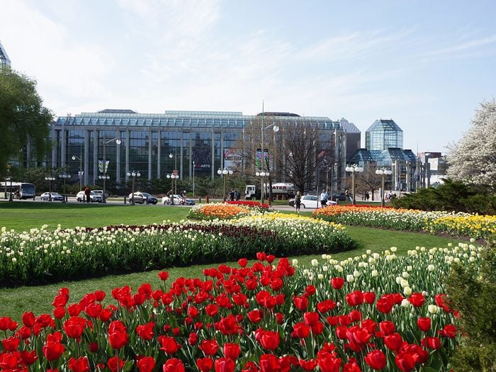

Group Tulip Packages
The Canadian Tulip Festival offers a variety of packages for group requirements .
This year , the Group Tulip Experience Passport GTEP is a must have package for group visitors to fully enjoy the canadian Tulip Festival
The benefits of the GTEP
It provides free 19 day access to the Tulip Promenade at majo's hill park .
Free access to other official Tulip sites and a Free Gift for every passport holder
The Tulip Experience Passport is a wonderful souvenir souvenir fo visitors and absolutely necessary to fully participate in the Tulip Experience in Canada Capital Region.
The passport also includes souvenir and shopping Discounts at many of our Concessions , Artisans , Attraction Sites and Festival Partners plus several other great benefits.

The GTEP entitles each visitor to :
Free admission to major's hill park for 19 days
Free admisson to Tulip Explosion Exhibition Hall Events and the World Flower Council Summit events at Hilton Lac-Leamy
Free Tulip Gift Souvenir of your visit
A"Passport Photo" of you with the tulips , a souvenir of your Tulip Experince
Souvenir passport stamps at all Official Sites and International Pavilions
Great souvenir and shopping discount coupons from Tulip Festival Concessions , Artisans , Parteners And attraction Sites
A chance to win in a Special Group passport Holders Contest to be announced
passport includes evening access but does not include "Get Out Weekends" evening concerts at major Hill's Park , which require a separate concert ticket or pass